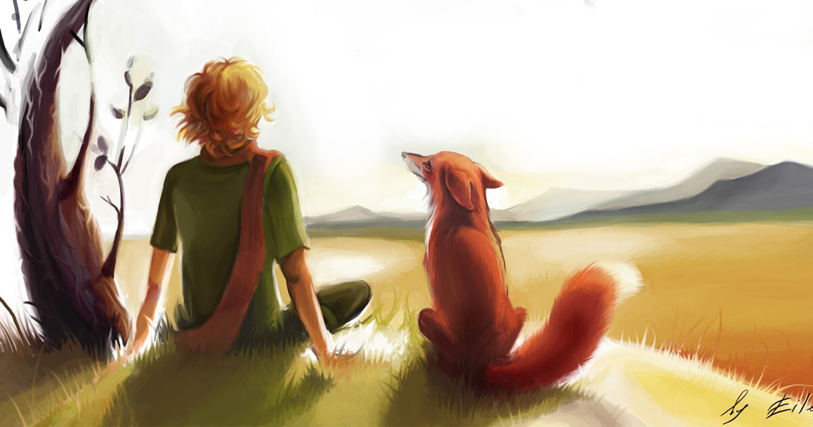

REFLEXÕES PESSOAIS
O livro é rico em reflexões e análise do mundo, sendo assim foi possível extrair diversos aprendizados, como:
• A raposa ensina ao Pequeno Príncipe o amor de cativar, a responsabilidade que temos ao entrar na vida de outras pessoas e os sentimentos que são transmitidos. Mostra para o garoto a afeição, a compreensão, as despedidas que por muitas vezes são necessárias, até mesmo, para percebermos o quanto a pessoa é importante, pois as memórias boas nunca vão embora.
• A rosa embora seja muito orgulhosa, tinha as suas fragilidades, e utilizava seus espinhos como proteção, mostrando as nossas posições, o quanto temos fragilidades e o quanto fazemos por orgulho para não mostrar essas vulnerabilidades. É perceptivo o quanto o Pequeno Príncipe ama a rosa e se dedica a ela, podendo ter 1000 rosas iguais, para ele a sua Rosa é única.
• O livro aborda a relação entre os seres humanos e a natureza, enfatizando a importância de preservar e proteger o meio ambiente. O cuidado com a rosa é um exemplo, pois o garoto tem preocupação com a escassez de água em seu planeta.
• Os adultos dos planetas demostram a sociedade, na qual muitos acham que podem mandar em todos, mesmo que seja obvio; beber para esquecer os problemas; ser orgulhoso e procurar a perfeição; possuir por possuir algo; trabalhar muito e esquecer de aproveitar a vida; romantização da disciplina sem acompanhar a modernidade; regras que impomos a si mesmos, que acaba com a nossa própria liberdade; o burocrático é mais importante que a experiência; e o excesso da automatização.
• O ser humano esqueceu das normas mais importantes, de ser feliz e perceber que o primordial é invisível, os adultos ao invés de cativar vai criando possibilidades, tendo atitudes voltadas só pela razão. Ao decorrer do livro, o Pequeno Príncipe enxerga o mundo com olhos inocentes e valoriza as coisas simples da vida, como a amizade, a beleza da natureza e os momentos de contemplação, ensinando a apreciar o que realmente importa, em vez de sermos consumidos por preocupações materiais ou superficialidades, como os adultos fazem.
“Elas (as pessoas grandes) adoram os números. Quando a gente lhes fala de um novo amigo, as pessoas grandes jamais se interessam em saber como ele realmente é. “(…) mas perguntam: Qual é a sua idade? Quantos irmãos ele tem? Quanto pesa? Quanto ganha seu pai? Somente assim é que elas julgam conhecê-lo”. (Retirado do livro, O Pequeno Príncipe).
• Por isso, ele cita a sabedoria das crianças, que olham tudo com um olhar verdadeiro e as coisas essenciais, vivendo o presente, e não toda hora buscando por algo melhor, algo que deveria ser feito na vida adulta.
• É bem reflexível a parte de ter uma mente aberta para realizar os nossos sonhos, como o piloto fez, quando criança foi desencorajado pelos adultos a desenhar, mas mesmo assim tentou.
• O Astrônomo Turco é um ótimo personagem para as pessoas materialistas e modernas, que só olham a aparência e status econômicos, refletirem e pararem de julgar.
• Nós ao se depararmos com essa leitura, queremos ser o Pequeno Príncipe, mas acaba que somos o comerciante, o homem de negócios, o vaidoso, o rei, porque perdemos a empatia e a inocência, essa obra é tão boa, que faz com que pensarmos em como ser melhor e como ter atitudes parecidas com o do Pequeno Príncipe.
AVALIAÇÃO
• Com toda a certeza dou 5 estrelas, pois foi o melhor livro que já li, me senti dentro da história e sem conseguir parar de ler, sem contar as belas aquarelas ilustradas durante o enredo, essa obra me fez pensar muito durante dias.
• Como disse anteriormente, os capítulos e os personagens são maravilhosos, achei incrível a parte dos planetas, no qual, cada um representa uma coisa da sociedade e traz diferentes perspectivas com ensinamentos, vindo à tona altas reflexões, sentimentos e emoções da civilização e de como somos orgulhosos. O engraçado é que são coisas simples do dia-a-dia, mas que acaba passando despercebido.
• É o terceiro livro mais lido no mundo, e publicado em mais de 220 idiomas, ou seja, realmente a obra é perfeita.

FRASES DO LIVRO
“Só se vê bem com o coração. O essencial é invisível aos olhos.”
Essa frase mostra que não devemos ver só a aparência e sim as atitudes, ou seja, o mais importante.
“É preciso que eu suporte duas ou três larvas se quiser conhecer as borboletas.”
Diz que a vida é feita de momentos, sendo eles bons ou ruins, mas que nós precisamos aprender a superá-los. São os momentos ruins que nos deixam mais fortes, para curtir os bons momentos e alcançar os nossos objetivos.
“É loucura odiar todas as rosas porque uma te espetou.”
Bom, essa frase reflete no medo de se iludir e acabar se machucando. Não é porque deu errado um relacionamento ou algo que não deva tentar novamente, para se tornar alguém feliz, esteja aberto a possibilidades e cure as suas mágoas.
“Tu te tornas eternamente responsável por aquilo que cativas.”
Refere-se que em relações criadas, temos que ter responsabilidade e ser saudáveis, para o amor crescer cada vez mais.
“Foi o tempo que dedicaste à tua rosa que a fez tão importante.”
Diz a respeito, que o tempo investido em alguém ou algo torna mais importante, ou até mesmo tem a habilidade de nos machucar.